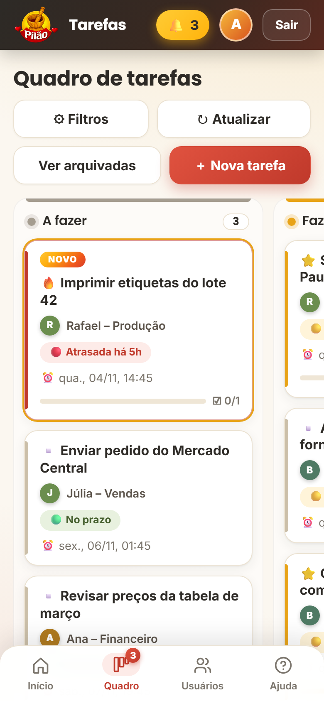

Seis ideias simples, vindas de métodos que grandes empresas usam, explicadas sem complicação.
Cada tarefa é um cartão. Ele anda da esquerda para a direita conforme o trabalho avança. Olhou o quadro, entendeu a situação.
Cada pessoa pode ter no máximo 3 tarefas em "Fazendo". Quem tenta começar a quarta recebe o aviso: "Termine uma antes de começar outra." Fazer tudo ao mesmo tempo é a forma mais rápida de não terminar nada. O limite pode ser mudado.
Se algo impede de continuar (sistema fora do ar, impressora sem toner, falta uma informação), a pessoa marca Travada e escreve o motivo. Sem motivo, o app não deixa. A tarefa fica em vermelho no painel do dono.
Três níveis: 🔥 Urgente, ⭐ Importante e Normal. Cada cartão tem uma faixa colorida, então dá para ver o que pede atenção primeiro.
Cada tarefa pode ter uma lista de "como fica pronto" (ex.: relatório impresso, enviado por e-mail). A tarefa só pode ser concluída com todos os itens marcados. Acabou o "acho que terminei".
Cada funcionário abre o app e vê só o essencial: o que está atrasado, o que vence hoje, quantas tarefas está fazendo agora (de 3) e se tem algo travado. Sem se perder no meio de tudo.
As cores avisam antes de virar problema:
